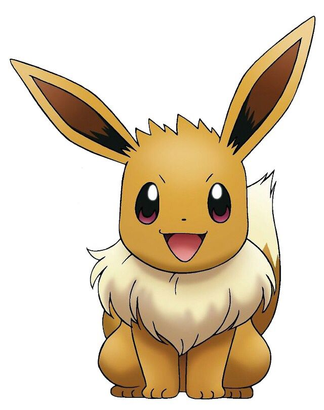

The polar bear (Ursus maritimus) is a hypercarnivorous species of bear. Its native range lies largely within the Arctic Circle, encompassing the Arctic Ocean and its surrounding seas and landmasses, which includes the northernmost regions of North America and Eurasia.

This crowd pleaser has five possible transformations (evolutions). Though more have been added in expansions.